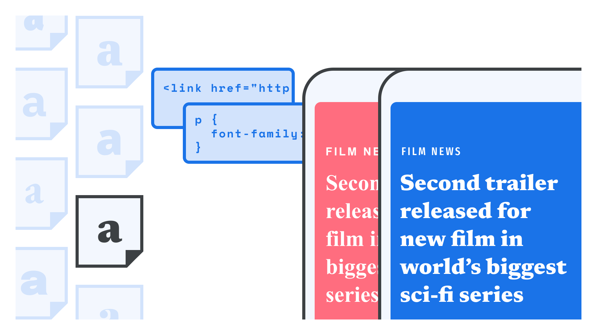

Using web fonts
By Elliot Jay Stocks · Google Fonts Knowledge.
Reviewed by Bram Stein, Doug Wilson, Laurence Penney.
Original article · Source on GitHub · CC BY-SA 4.0. Text, illustrations and existing credits reproduced from the licensed Knowledge repository. Open Shelf adapted the layout and links; these adaptations are also CC BY-SA 4.0. No endorsement implied.
After we’ve chosen a typeface to use in our project, and have either chosen a font delivery service or acquired the font files themselves, there are effectively three steps in using web fonts. First we’ll need to load the font files; then, we need to reference those files and assign weights and styles (although these first two steps are done for us if we’re using Google Fonts or Adobe Fonts); and finally, we get to the fun stuff: the typography. While the entirety of Google Fonts Knowledge is a guide to the latter part, we’ll cover the first two steps here in this article.

Please note that while this article describes the process in general, it differs slightly if we’re using variable fonts; for that scenario, see our article, “Loading variable fonts on the web.”
Load the font files
If we’re using a font delivery service, there’s a line or two of code we’ll need to load the files before we use them. This is covered in more depth in our article, “Using web fonts from a font delivery service.”.
Reference the font files
In our CSS file we’ll first need to create a family reference for the font files we’re loading via an @font-face declaration. (We recommend using a dedicated CSS file for loading our fonts.)
While the path to the font file must be precise, we can call our family name whatever we want. It’s not even necessary to have it in any way related to the actual name of the typeface—although keeping them consistent is recommended, of course. (Note that there must not be a space between url and the opening parenthesis—this is a common error.)
@font-face {
font-family: 'FAMILY_NAME';
src: url(FONT_FILE_NAME.woff2) format('woff2');
}
Assign weights and styles
Next, let’s add in a style—either “normal” (i.e., upright), “italic,” or “oblique”—and declare a numeric font weight:
@font-face {
font-family: 'FAMILY_NAME';
font-style: NORMAL_OR_ITALIC;
font-weight: NUMERIC_WEIGHT_VALUE;
src: url(FONT_FILE_NAME.woff2) format('woff2');
}
We’ll need to repeat these steps for every font file we wish to load, but note that the family name remains the same unless we’re actually changing the typeface itself.
Also note that the weight and style declarations are handled slightly differently for variable fonts. Again, please see our article, “Loading variable fonts on the web”.
Optimizing font loading
With the fundamentals of font loading covered, let’s explore some optional steps that can improve the user experience. It helps to understand a bit about the loading and rendering process; the basic flow of which goes something like this:
- Browser requests a page
- Browser downloads HTML and linked CSS
- Browser parses HTML and CSS
- Browser initiates download of any linked CSS assets (like fonts)
- Browser now waits up to 3 seconds before starting to render the page while waiting for web fonts to download
- If the fonts arrive within 3 seconds, the page is rendered as it should be
- If the fonts have not fully loaded, the browser renders the page using fallback system fonts, then re-renders the page once the web fonts arrive
Ideally, the fonts load quickly and the page is rendered correctly the first time—but often that’s not the case, which brings us to the next scenario. The phenomenon of text being rendered in the fallback fonts and then re-rendering with the proper ones is known as a flash of unstyled text (FOUT).
Given that the purpose of any site is generally to deliver content, FOUT should be preferred, and indeed hastened if possible. Introducing a delay of at least three seconds greatly increases the chances of users abandoning the website altogether and going elsewhere. The W3C actually introduced the ability to tell the browser how to behave in this scenario, and the Google Fonts service and API now support it, too.
This comes in the form of a CSS descriptor called font-display. By providing a value of swap, we tell the browser to render the page right away with fallback fonts, and then redraw the page once the fonts have loaded.
In Google Fonts, a request for Crimson Pro would then look like this:
https://fonts.googleapis.com/css2?family=Crimson+Pro:wght@200..900&display=swap
In Adobe Fonts, we can choose our font-display preferences in our web project’s settings.
For self-hosted fonts, we simply add font-display: swap into our @font-face declaration:
@font-face {
font-family: 'FAMILY_NAME';
font-style: NORMAL_OR_ITALIC;
font-weight: NUMERIC_WEIGHT_VALUE;
font-display: swap;
src: url(FONT_FILE_NAME.woff2) format('woff2');
}
To learn more aboutfont-display and its options, visit the W3C specifications page and the MDN Web Docs site.
To take our solution further, take a look at Bram Stein’s FontFaceObserver, or read more about font-loading performance in general in “Developing a robust font loading strategy for CSS-Tricks” by Zach Leatherman.